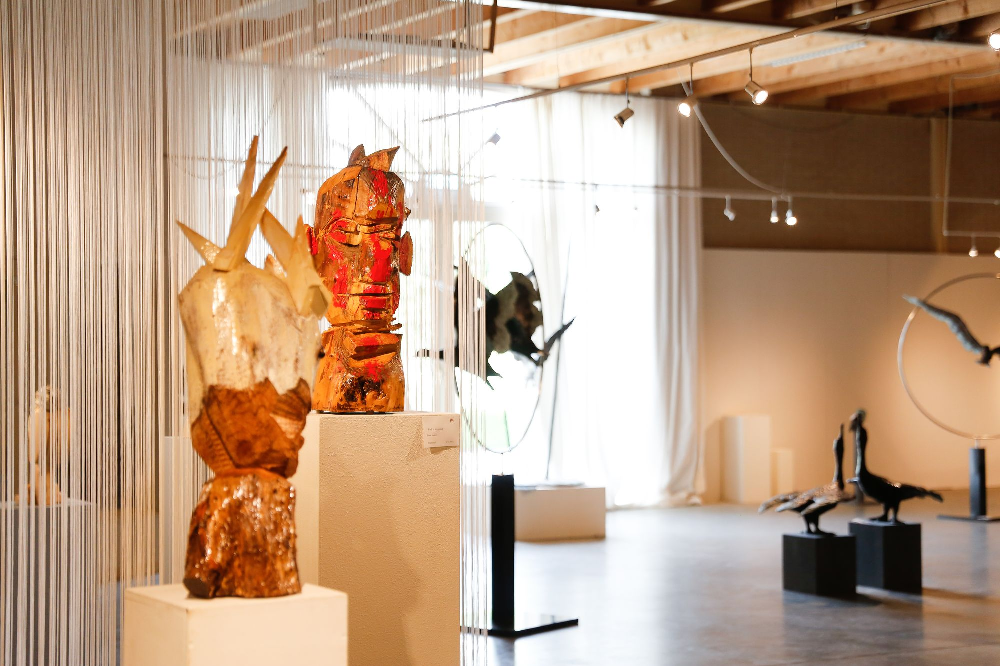
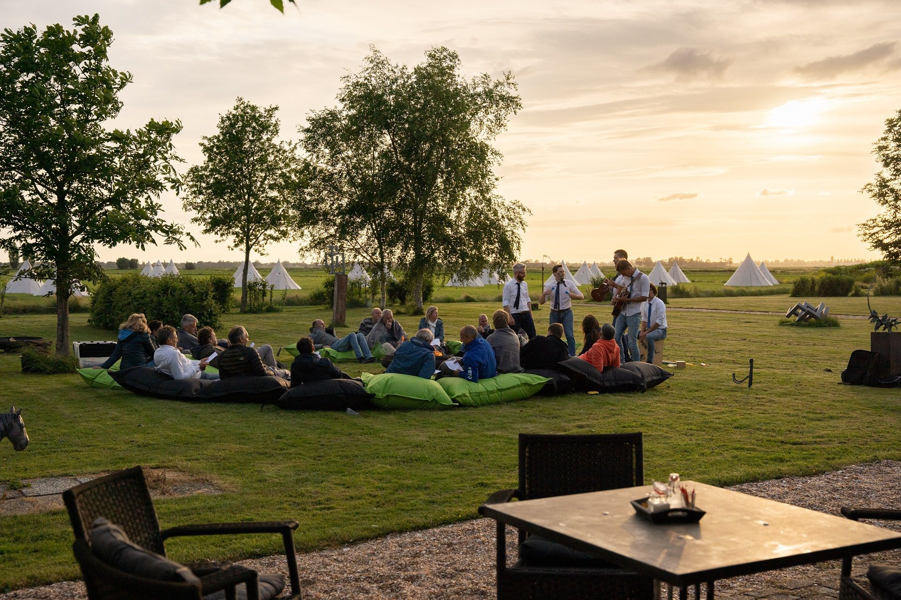
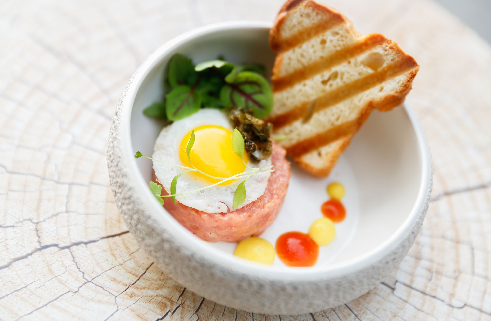

Echte fotografie van de locatie: mensen in actie, gerechten van dichtbij, de hoeve bij daglicht. Rechte uitsnedes, geen radius, geen duotoon, geen zware grade. De linker tegel toont --overlay-photo voor leesbaarheid van tekst.